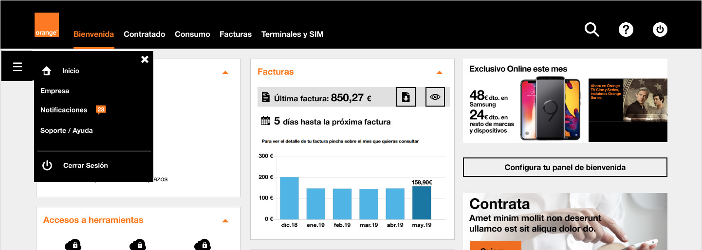
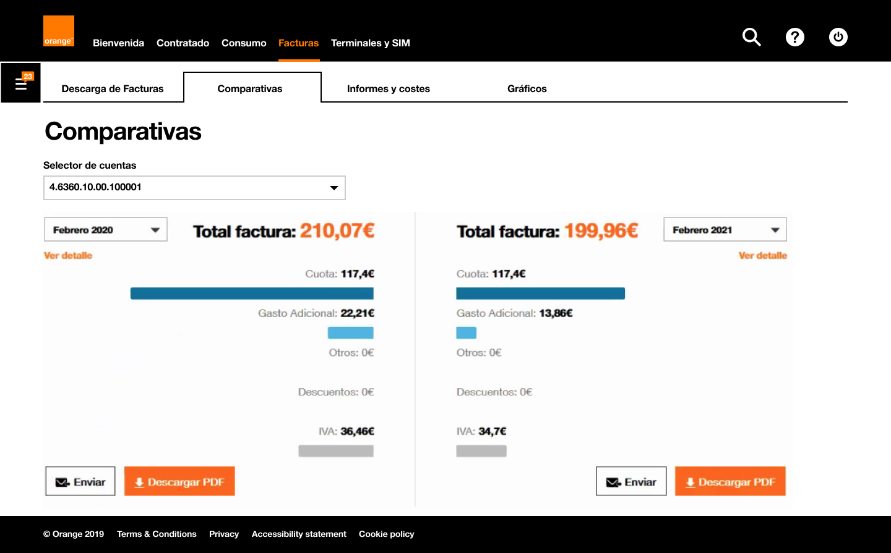
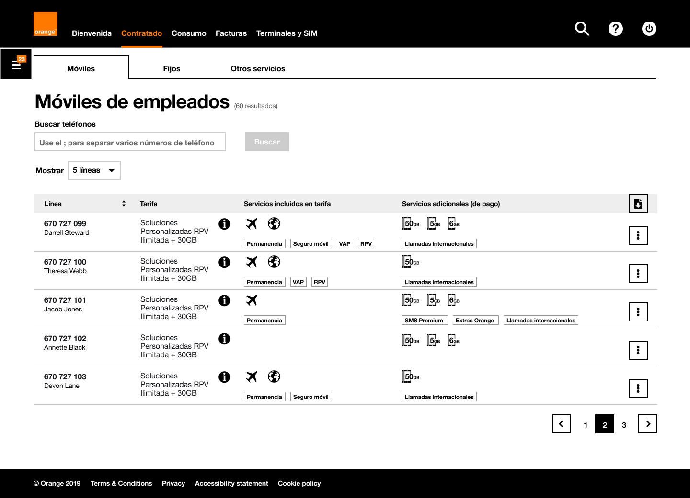
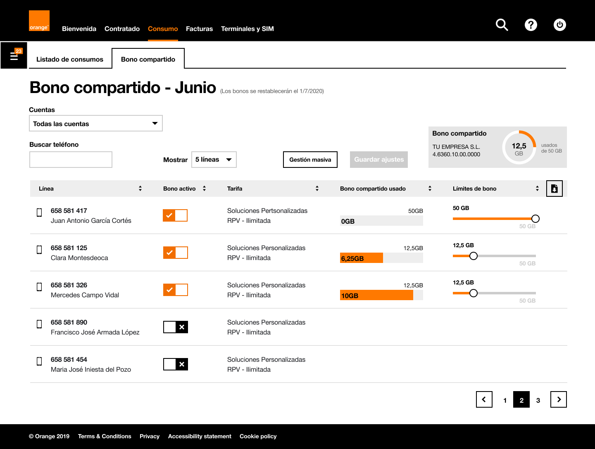
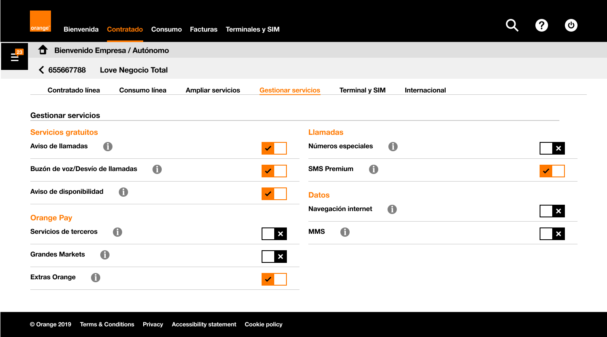

Orange Businesses

Orange Businesses
→ Description: Self-management portal for SMEs and the self-employed.
→ Date: Mar 2020 - May 2021.
→ Role: Senior Product Designer (UX/UI). As the sole designer, I led all design-related tasks: ideation, workshops, UX flows, interface design, prototyping, usability, and collaboration with a research specialist for user testing.
→ Devices: Responsive web (desktop, tablet, mobile).
→ Methodology: Agile & Design Thinking.
→ Tools: Jira, Confluence, Miro and Figma.
The Problem
Orange wanted to build a self-management platform tailored for small businesses and freelancers, allowing them to configure, manage, and monitor their contracted services (invoices, usage, tools, etc.).
However, the target audience was very diverse — from a self-employed professional with a few employees to companies with over 100 staff and international clients.
“The challenge: Unify both user types in one product while offering a tailored experience that avoids information overload and respects different priorities.”
Solution Proposal
We designed a modular dashboard that gave users control over what they saw and how they accessed their most-used features.
By allowing collapsible and reorderable content blocks, users could customize their welcome panel to focus on what mattered most — whether it was invoices, service activations, or line usage.
Although business constraints prevented full personalization, we balanced user freedom with strategic visibility of key sections like “Contracted Services” and “Invoices.”
In addition, we rethought the navigation with two complementary systems: a main top menu based on lifecycle stages and a contextual side drawer with company-specific options.
The Team
I worked as the sole UX/UI designer on the project, collaborating closely with:
- Business stakeholders.
- Development team.
- A user research specialist.
- Project managers and Agile team members.
Process
We followed a Design Thinking approach:
1. Empathize
I led workshops with stakeholders to align expectations and identify business goals.
2. Define
We created personas representing freelancers and SMEs with different needs and behaviors.
3. Ideate
We mapped user journeys and collaboratively sketched dashboard components and navigation flows.
4. Prototype
I designed interactive Figma prototypes for desktop and mobile.
5. Test
Prototypes were tested with users to validate discoverability, task efficiency (e.g., deactivating services, downloading reports), and satisfaction.
Results
- Successfully launched a scalable, flexible portal for SMEs and freelancers.
- Improved task success rate (e.g., invoice downloads, service management).
- Reduced cognitive load by allowing users to collapse or reorder dashboard modules.
- Positive feedback from internal stakeholders and pilot users on customization options.
- Portal reuse of EGEO (Espacio Grandes Empresas Orange) features adapted for smaller clients.
Key Learnings
- Designing for user control increases adoption but requires careful negotiation with business and tech constraints.
- Personalization doesn’t have to be total — partial flexibility can still create a sense of ownership.
- It’s crucial to differentiate content while maintaining a unified structure and visual identity.
- The onboarding process is vital for helping users understand new interaction models like configurable dashboards.
Conclusion
This project was a great opportunity to lead an end-to-end product design process for a complex user base. By embracing flexibility, prioritizing user goals, and working cross-functionally, we delivered a platform that meets both business and user needs.
It also reinforced my belief that giving users clarity, control, and simplicity is always a worthwhile investment.
Design Gallery
→ Dashboard deployed (desktop version).

→ Dashboard collapsed (desktop version).

→ Onboarding for customizing the dashboard.

→ User menu.

→ Invoice page - Comparison.

→ Contracted services page.

→ Consumption page.

→ Product navigacion page.
